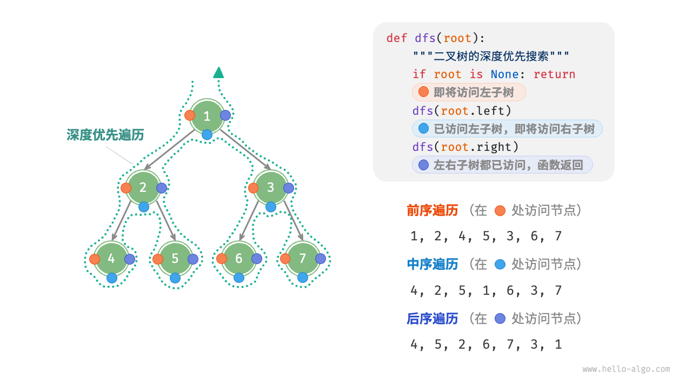

Trees
Trees
https://www.w3schools.com/dsa/dsa_theory_trees.php

def pre_order(root: TreeNode | None):
"""前序遍历"""
if root is None:
return
# 访问优先级：根节点 -> 左子树 -> 右子树
res.append(root.val)
pre_order(root=root.left)
pre_order(root=root.right)
def in_order(root: TreeNode | None):
"""中序遍历"""
if root is None:
return
# 访问优先级：左子树 -> 根节点 -> 右子树
in_order(root=root.left)
res.append(root.val)
in_order(root=root.right)
def post_order(root: TreeNode | None):
"""后序遍历"""
if root is None:
return
# 访问优先级：左子树 -> 右子树 -> 根节点
post_order(root=root.left)
post_order(root=root.right)
res.append(root.val)
Invert Binary Tree
We can identify that each node in the tree is switched, so we can simply just switch the left and right node
class Solution:
def invertTree(self, root: Optional[TreeNode]) -> Optional[TreeNode]:
#dfs on each node and switch each other
def dfs(root):
if not root:
return
root.left, root.right = root.right, root.left
dfs(root.left)
dfs(root.right)
dfs(root)
return root
Maximum Depth of Binary Tree
DFS use the level to track each node and return when it reaches the bottom, and compare the max(left, right). Bottom up
class Solution:
def maxDepth(self, root: Optional[TreeNode]) -> int:
if not root:
return 0
return 1 + max(self.maxDepth(root.left), self.maxDepth(root.right))
# Below is an uncommon top-down style approach where we increment the level for each step
def dfs(node, level):
if not node:
return level
left = dfs(node.left, level + 1)
right = dfs(node.right, level + 1)
return max(left, right)
BFS approach
class Solution:
def maxDepth(self, root: Optional[TreeNode]) -> int:
# bfs store each node and pop
if not root:
return 0
def bfs(root):
depth = 0
q = deque([root])
while q:
n = len(q)
depth += 1
for _ in range(n):
node = q.popleft()
if node.left:
q.append(node.left)
if node.right:
q.append(node.right)
return depth
return bfs(root)
Diameter of Binary Tree
Similar to find the depth of binary tree, we just need to also track if the left + right is the maximum, we could add a comparison function before returning each node's depth.
class Solution:
def diameterOfBinaryTree(self, root: Optional[TreeNode]) -> int:
# for each node, we check the left and right, and also left + right
self.res = 0
def dfs(root):
if not root:
return 0
left = dfs(root.left)
right = dfs(root.right)
self.res = max(self.res, left + right) # track the diameter
return 1 + max(left, right)
dfs(root)
return self.res
Balanced Binary Tree
Similar idea of finding the depth of the binary tree, this case we would compare each node's height. Notice there are serval ways to determine the result, I am using a self.balanced for simplicity, but we could also use a tuple to store the state or change the return on left and right (-1) when it is unbalanced in this question.
class Solution:
def isBalanced(self, root: Optional[TreeNode]) -> bool:
self.balanced = True
def dfs(root):
if not root:
return 0
left = dfs(root.left)
right = dfs(root.right)
if abs(left - right) > 1:
self.balanced = False
return 1 + max(left, right)
dfs(root)
return self.balanced
Same Binary Tree
Traverse both trees at the same time and compare each node's value.
class Solution:
def isSameTree(self, p: Optional[TreeNode], q: Optional[TreeNode]) -> bool:
def dfs(p, q):
if not p and not q:
return True
elif not p:
return False
elif not q:
return False
if p.val != q.val:
return False
left = dfs(p.left, q.left)
right = dfs(p.right, q.right)
return left and right
return dfs(p, q)
Subtree of Another Tree
We could separate this question into 2 parts, one is find if 2 trees are identical and second is to iterate each node on the root and compare to check if there is a match.
class Solution:
def isSubtree(self, root: Optional[TreeNode], subRoot: Optional[TreeNode]) -> bool:
def isSameTree(p, q):
if not p and not q:
return True
elif not p:
return False
elif not q:
return False
if p.val != q.val:
return False
left = isSameTree(p.left, q.left)
right = isSameTree(p.right, q.right)
return left and right
def dfs(root):
if not root:
return False
if isSameTree(root, subRoot):
return True
left = dfs(root.left)
right = dfs(root.right)
return left or right
return dfs(root)
Lowest Common Ancestor in Binary Search Tree
The DFS approach is straightforward and would take O(n) space, but we can further optimize into O(1) space.
class Solution:
def lowestCommonAncestor(self, root: TreeNode, p: TreeNode, q: TreeNode) -> TreeNode:
# mid, left, right
self.ans = None
def dfs(root):
if not root:
return False
left = dfs(root.left)
right = dfs(root.right)
mid = True if root.val == p.val or root.val == q.val else False
if left + right + mid >= 2:
self.ans = root
return left or right or mid
dfs(root)
return self.ans
We can use the property of the binary search tree, when that basically if a node is between the p and q, then it should become the LCA and we can return. If both nodes smaller, we can set the curr to left node and vice versa for the right node.
class Solution:
def lowestCommonAncestor(self, root: TreeNode, p: TreeNode, q: TreeNode) -> TreeNode:
cur = root
while cur:
if p.val > cur.val and q.val > cur.val:
cur = cur.right
elif p.val < cur.val and q.val < cur.val:
cur = cur.left
else:
return cur